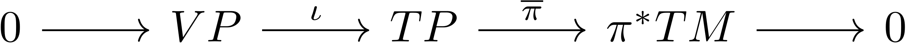

Chapter 4 Connections
4.1 Construction
To each \(A \in \mathfrak{g}\) we can naturally associate a fundamental vector field \(A^*\) on \(P\) given by \((A^\#)(p) = (\sigma_p)_*(A)\), where \(\sigma_p : G \to P\) is the map \(g \mapsto pg\). Equivalently, \((A^\#)(p)\) is the tangent vector to the curve \((\sigma_p \circ \exp)(At)\) at \(t = 0\). Define \(V_p = T_p \, \pi^{-1}(p) = \ker(\pi_*) \cap T_p P\), the vertical subspace of \(T_p P\); \(A \mapsto (A^*)_p\) is an isomorphism \(\mathfrak{g} \mapsto V_p\). Moreover, \(A \mapsto A^\#\) is equivariant with respect to the adjoint and principal actions of \(G\) and preserves the respective Lie brackets. The vertical bundle \(VP = TP\) is the vector subbundle of these vertical subspaces.
To a principal bundle we can associate its Atiyah sequence.

where \(\iota\) is the natural inclusion and \(\overline{\pi}\) is the map \(X \mapsto (\pi_{TP}(X), (\pi_P)_*(X))\). A connection on \(P\) is a choice of equivariant split for this sequence (direct sum, left, and right splits are equivalent). Explicitly, the \(G\) actions are the diagonal action (identifying \(VP \cong P \times \mathfrak{g}\)), the canonical action, and the induced action from \(P \times TM\) leaving \(TM\) invariant, respectively.
In particular, a direct sum split \(\varphi\) is frequently identified with the vector subbundle \(HP = \varphi^{-1}(0 \oplus \pi^* TM)\), which is complementary to \(VP\) and invariant under \((R_g)_*\) for \(g \in G\) and referred to as an Ehresmann connection. Left splits can be understood as \(G\)-equivariant \(\mathfrak{g}\)-valued one-forms on \(P\), commonly referred to as connection one-forms. Right splits are interpreted as maps sending a vector in \(T_m M\) to one in any \(T_p P\) for \(p \in \pi^{-1}(m)\) and are known as horizontal lifts.